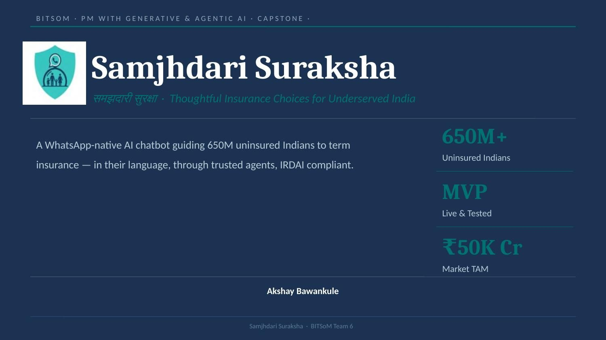
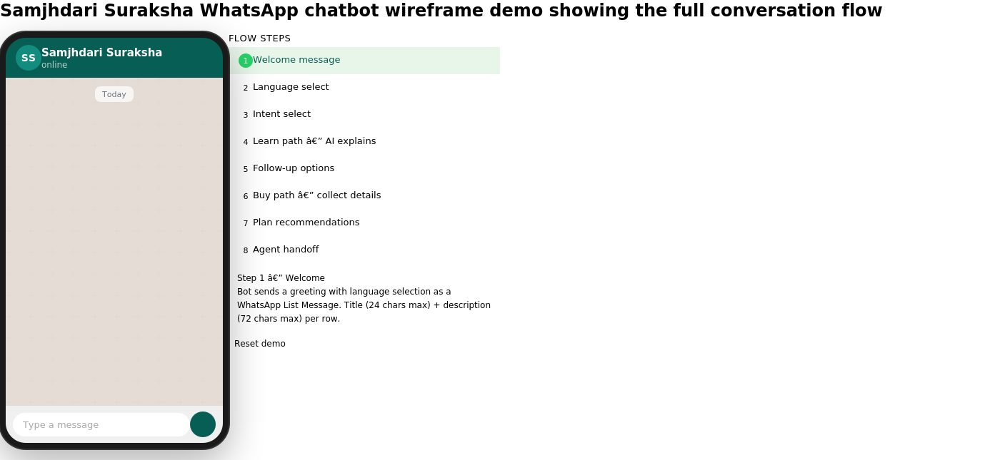
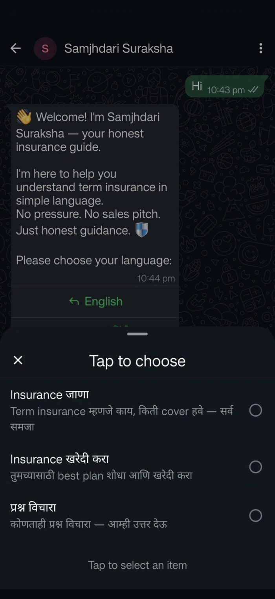
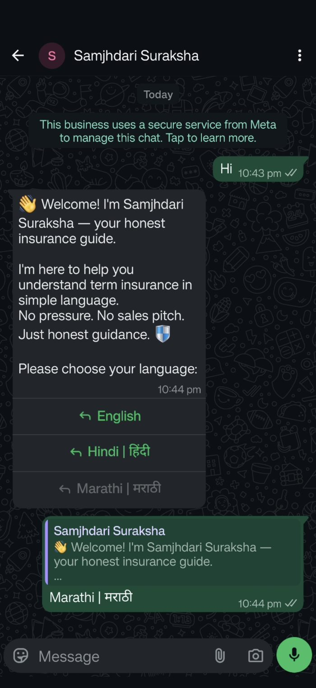
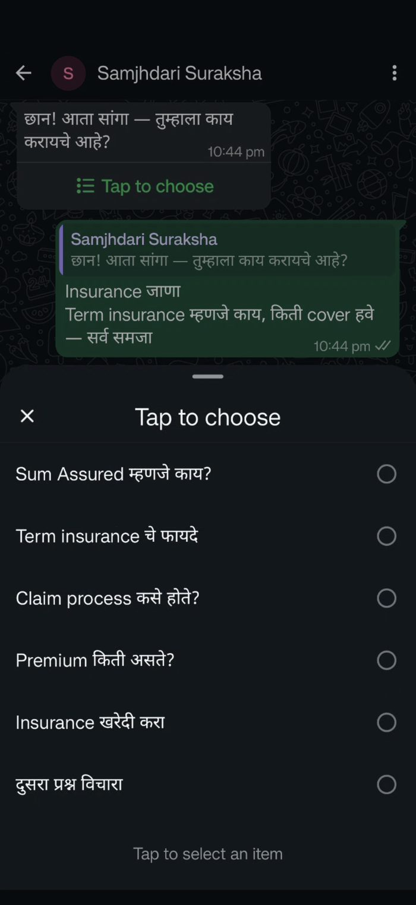
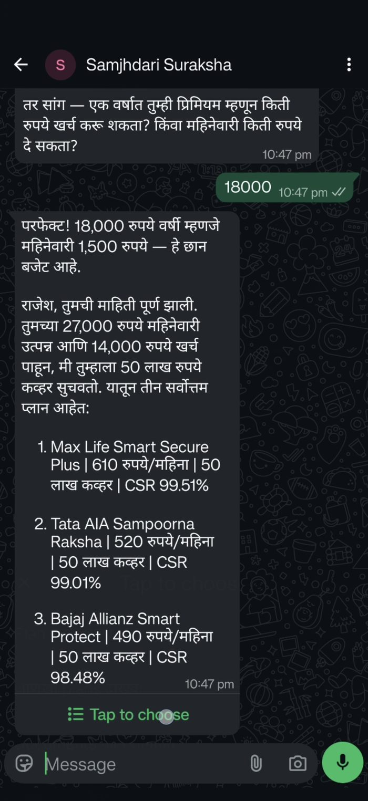
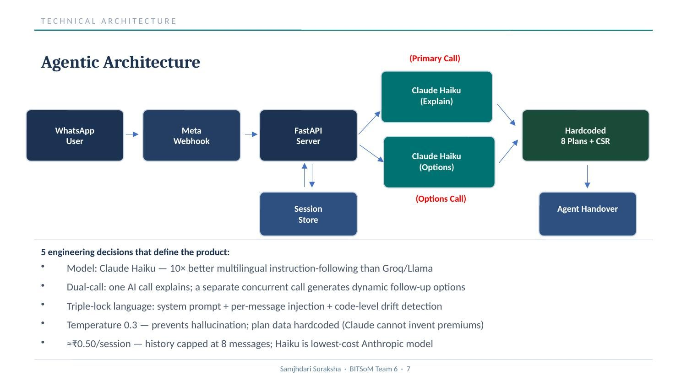

समझदारी सुरक्षा — a WhatsApp-native AI chatbot guiding underserved, uninsured Indians to term life insurance in their own language, through trusted community agents. IRDAI-guidance-only. BITSoM capstone, Team 6.

How can AI improve financial inclusion by helping underserved, underinsured individuals understand, choose, and act on term insurance — through personalised, trustworthy, simple guidance, without requiring financial knowledge or complex infrastructure? That was the brief I set myself after advising retail clients on term insurance at HDFC and watching the same objections repeat: confusion, distrust, and a product that assumed a level of financial literacy most buyers don't have.
I validated this against secondary research rather than assumption — app store reviews on Policybazaar, and threads on r/IndiaInvestments and r/personalfinanceindia surfaced a consistent pattern: agents pushing savings policies instead of term cover, unclear exclusions, and claim processes nobody could explain in plain language.
Five structured interviews using the Jobs-to-be-Done framework, on top of the secondary research, surfaced four themes that shaped every downstream decision:
Before writing a line of backend code, I mapped the full 8-step conversation as an interactive HTML wireframe — welcome → language → intent → learn/buy branch → recommendation → agent handoff — to pressure-test WhatsApp's List Message constraints (title ≤24 characters, description ≤72) before they became a build-time surprise.

The same flow, live on WhatsApp, in Marathi — language confirmation, the Learn path's dynamic topic menu, and a Buy-path outcome showing three ranked plans with CSR ratios after the bot collects income and expense data conversationally.




A WhatsApp message hits a Meta webhook, which lands on a FastAPI server backed by a session store. The server fires two concurrent Claude Haiku calls — one explains the concept in-language, the other generates the next set of dynamic follow-up options — before either touches the hardcoded 8-plan-plus-CSR dataset that ultimately hands off to a licensed agent.

The end user pays nothing. Insurers, NBFCs, and agent networks pay a flat SaaS fee plus a referral fee per completed policy — deliberately flat rather than value-based, so the product has zero incentive to push more expensive plans over the right one.
The bot never handles payment or policy issuance — a licensed agent always completes the transaction. No Aadhaar or biometric data is collected by the bot itself, and the product is built to be compliant with India's Digital Personal Data Protection Act from day one, not retrofitted later.
The EN/HI/MR WhatsApp bot is live, the LEARN and BUY flows are complete, and agent handoff works end to end. The one open blocker is Meta Business Verification — once that clears, the product is ready for its first real cohort.
"650 million Indians already have WhatsApp. They just needed a product designed for them — and now it exists."